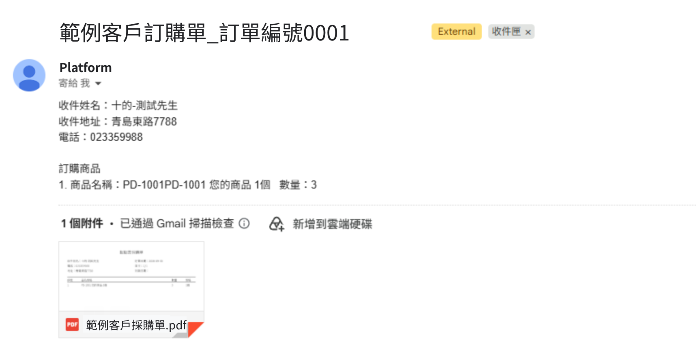
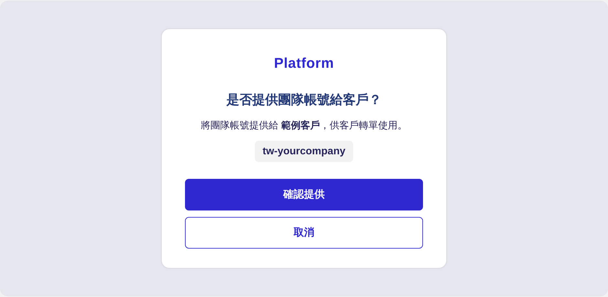
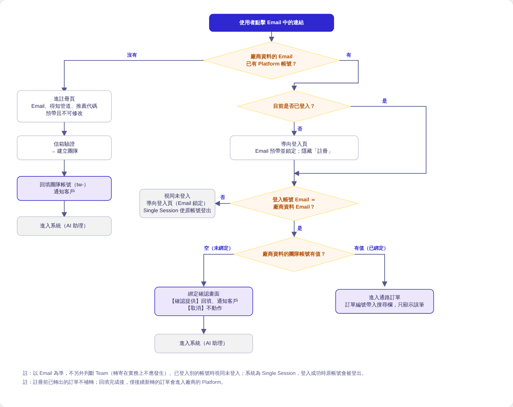
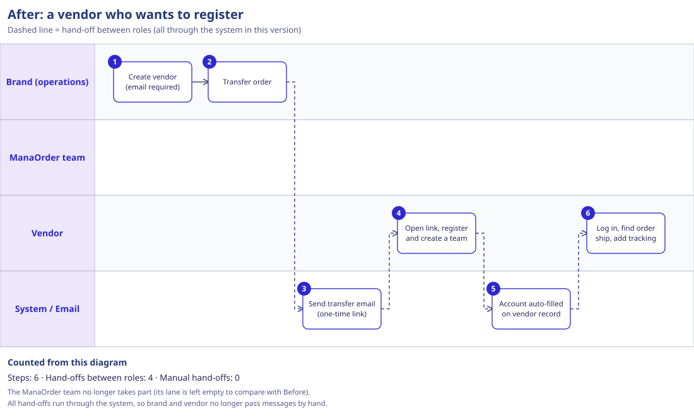
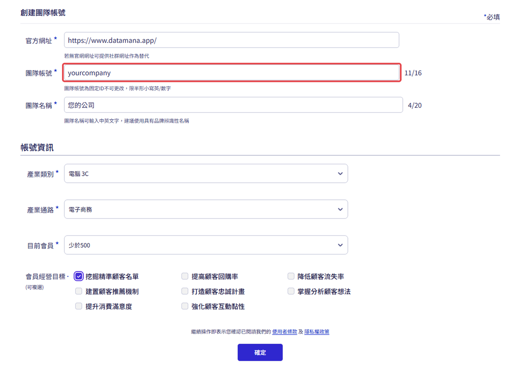

The platform
- Our order management platform helps our clients manage orders from all their sales channels in one place.
- It reads PDF and Excel orders automatically, so staff do not key them in by hand.
- Some orders are shipped by a vendor, a supplier who sends the goods straight to the client's customer.
- The client transfers such an order to the vendor in one click, and the vendor gets an email.
Problem
Vendors rarely sign up to our platform, because signing up costs them more than it returns.
- A vendor without an account can only reply by email.
- There is no fixed way to report tracking after shipping, so our client's operations staff chase it by email or LINE.
- Signing up meant four manual hand-offs between the client, our team and the vendor (see Before below).
- Operations told us vendors often say it is too much trouble and ask to keep using email.
Evidence: interviews with operations staff at our client, who work inside the same group, so the vendor side is relayed, and my own walkthrough of their process. There was no formal user testing.

Design




1 / 4
Example data only
What happens when a vendor clicks the link
- One link, one email. The system decides where to send the vendor only after the click.
- No account: the sign-up page opens with email, referral source and code locked. Then email verification, then the vendor creates a team. The team account is filled into the client's record and the client is notified.
- Has an account, not logged in: the login page opens with the email locked and the sign-up option hidden.
- Logged in with a different email: treated as logged out. The platform allows one session, so the other account is signed out.
- Logged in with the same email: if the client's record has no team account, the confirmation screen opens. If it has one, the order list opens with the order number in the search box.
- The match is by email only, not by team. Orders transferred before the vendor registered are not sent again.

Before and after


Before 9 steps, 4 manual hand-offs
- ClientCreate the vendor record (email required)
- Platform teamClient asks the team for a sign-up URL
- ClientForward the URL to the vendor
- VendorRegister and create a team
- VendorGet the team account (tw- prefix) and send it back by email or LINE
- ClientType the vendor's team account in
- ClientTransfer the order
- SystemSend the transfer email and a system notice
- VendorLog in, find the order, ship, add tracking
After 6 steps, no manual hand-offs
- ClientCreate the vendor record (email required)
- ClientTransfer the order
- SystemSend the transfer email with a one-time link
- VendorOpen the link, register and create a team
- SystemFill the team account into the vendor record
- VendorLog in, find the order, ship, add tracking
Manual hand-off
| Counted from the diagrams | Before | After |
|---|---|---|
| Manual hand-offs | 4 | 0 |
| Steps | 9 | 6 |
| Hand-offs between roles | 6 | 4, all through the system |
These numbers come from the diagrams. They are not measured results, because the feature did not launch.
Design decisions
| Decision | Why |
|---|---|
| Fill in, do not create | The client has already created the vendor record and entered its email. Only the team account is missing, so the link fills that gap. |
| Bind by code, not by email | A vendor may use a different email. The link carries a code for this client and vendor. The sign-up page locks the email and requires verification, so forwarding the link cannot bind the wrong person. |
| Log in before binding | My first screen showed the team account and a Confirm button before login, so anyone with the link could bind it. I changed it so login comes first. |
| Handle old links | Links in older transfer emails stay clickable, so they need an expired page with a next step. |
| No back-fill for orders already sent | Those orders were already sent by email. Transferring them again would create duplicates, so the requirements say so, to keep it from looking like a bug. |
Companion: a guide for vendors
- I also wrote an eight-step guide that takes a vendor from sign-up to filling in tracking.
- These are the main changes I made to it.
| Problem | Change |
|---|---|
| Seven callouts on one screenshot | Kept one red box on the team account, the only place a reader could go wrong. Callouts mark mistakes and order, not every field. |
| The account example could lose its prefix | Step 2 warns about the tw- prefix and step 4 stresses the full account. |
| What to send the client was in the last step | Moved it into a warning box at the top, with how to find the account. |
| Text said tracking syncs on its own | The real screen needs Save. Corrected it and added a warning. |


The guide leaves out email verification, which the newer requirements added. It needs a check against the live flow.
Where it stands
- The feature was postponed because the login flow turned out to be complex. My manager took it over before launch.
- Left open for the product manager: a vendor with an account but no team, a login email that does not match, and one email with several teams.
- Next time I would talk to the engineers about login limits before fixing the scope.
Screens and account names are example data. Numbers come from process diagrams and were not measured.